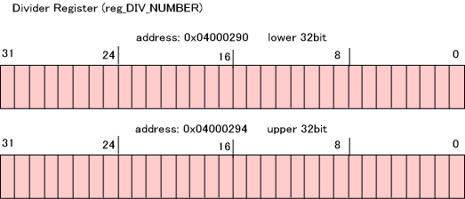
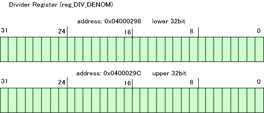
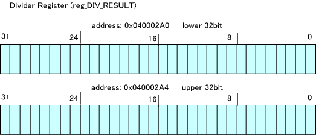
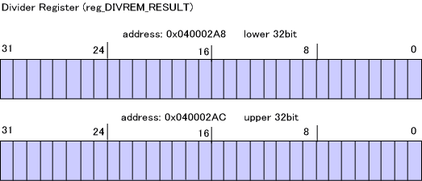
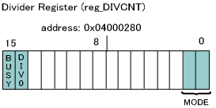

DS には除算および平方根演算のアクセラレータが備わっています。ここでは除算器について説明します。
除算のためのレジスタ
データレジスタとして、被除数、除数、商、余りのために以下のレジスタが用意されています。




これらのレジスタは次のような関係があります。
そして、除算器を制御するための以下のコントロールレジスタが用意されています。

除算器の動作
除算器は、データレジスタ DIV_NUMER と DIV_DENOM に被除数と除数をセットし、コントロールレジスタ DIVCNT を適切に設定すると計算結果が DIV_RESULT と DIVREM_RESULT に格納される、という動作で計算を行ないます。(実際は、DIV_NUMER, DIV_DENOM、DIVCNT の何れかに値を書くとすぐに演算が始まり、演算の途中であってもレジスタへの書き込みがあれば最初から演算をやり直します)
除算には３つの除算モードがあります。
これらは DIVCNT の MODEビットへセットする値で変更することが出来ます。
除算器が除算を開始すると、DIVCNT の BUSY ビットが 1 となります。計算結果を弾き出すまでそのまま 1で、これが 0 となったときに DIV_RESULT と DIVREM_RESULT レジスタの値は演算結果として正当なものとなります。
除数が 0 である場合、DIVCNT の DIV0 ビットが 1 となります。この場合の演算結果は不定です。
計算サイクル
除算器が除算演算のために必要なサイクル数は除算モードによって異なります。
除算器のデータレジスタにパラメータをセットしてから、結果が出るまでの時間、別の作業を行なうことで効率的に除算器を用いることが出来ます。
パラメータの設定
除算のパラメータをセットする関数は CP_SetDivImm*() 、CP_SetDiv*() です。両関数ともに除数と被除数をセットします。CP_SetDiv*() ではさらに DIVCNT レジスタの除算モード設定を行ないます。
CP_SetDivImm32_32(), CP_SetDivImm64_32(), CP_SetDivImm_64_64()
CP_SetDiv32_32(), CP_SetDiv64_32, CP_SetDivImm64_64()
例えば、同じ除算モードで連続して除算演算を行なう場合、最初の1回は CP_SetDiv*() を使い、それ以降は CP_SetDivImm*() を使う、という用途が考えられます。
演算終了待ち
演算が終了したかを調べるには CP_IsDivBusy() を呼んでください。
演算が終了するまで待つには CP_WaitDiv() を呼んでください。
演算結果の取得
除算演算の商を取得するには CP_GetDivResult*() 、CP_GetDivResultImm*() を呼んで下さい。前者は DIVCNT が BUSY 状態でなくなるのを待ってから結果を取得します。後者はすぐに取得します。
余りを取得するには、CP_GetDivRemainder() 、CP_GetDivRemainderImm*() を呼んで下さい。前者は DIVCNT が BUSY 状態でなくなるのを待ってから結果を取得します。後者はすぐに取得します。
注意
除算モードが、"32ビット割る32ビット" や "64ビット割る32ビット" の場合、32ビット分しか使われていないデータレジスタの上位32ビットは 0 としておく必要があります。ただし、NitroSDK の関数ではこれは自動で行なわれます。アプリケーションで直接レジスタに値を設定するときに忘れないようご注意ください。
スレッドシステムを使用している場合、デフォルトでは除算器演算はスレッドセーフとなっています。
例
以下は除算器を用いて除算を行なって結果を表示する例です。
u32 quotient;
u32 remainder;
//---- set parameter and div-mode
CP_SetDiv( 0x12345678, 0x300, CP_DIV_32_32BIT_MODE );
//---- wait fot finishing division
CP_WaitDiv();
//---- display result
quotient = CP_GetDivResultImm32();
remainder = CP_GetDivRemainderImm32();
OS_Printf( "quotient=%x, remainder=%x\n", quotient, remainder );
割り込み内で除算器/平方根演算器を使用する場合には、割り込み元の演算結果を破壊してしまう可能性があります。
割り込み内で除算器/平方根演算器が使用される場合にはCP_SaveContext,CP_RestoreContext
を使用して除算器/平方根演算器の状態を退避・復元するようにしてください。
スレッド切り替え時には、除算器の内容もスレッドコンテキストから自動的に復元されます。
void intr_func( void )
{
CPContext context;
CP_SaveContext( &context );
CP_SetDiv32_32( 1000, 5 );
CP_WaitDiv();
result = CP_GetDivResult();
CP_RestoreContext( &context );
}
2006/08/07 計算サイクルの表記をCPUサイクル換算に変更、割り込み内での使用に関する注意を追加
2004/12/27 初版